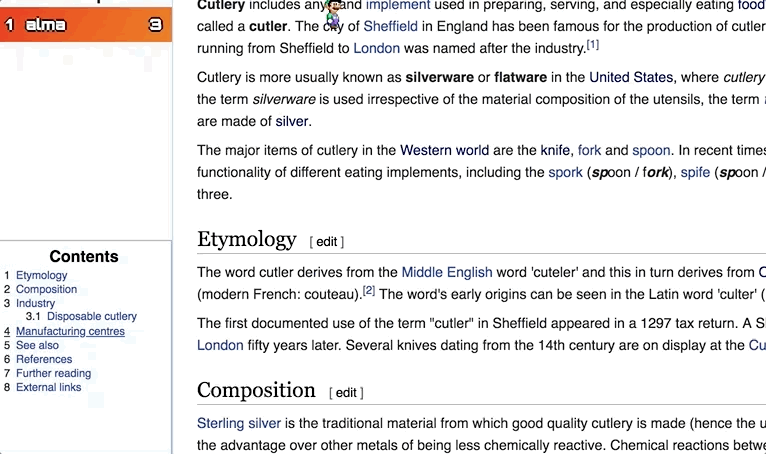

WebAdventure is a Chrome Extension that provides a unique and fun way of interacting with Wikipedia via a game format. Players compete against each other in a version of the "Wiki Game". For each player, the objective of the game is to reach the "goal" page before any other player does. Live updates of other players and power-ups and power-downs throughout the Wikipedia pages make for a competitive and exciting experience!
Upon opening the game extension, the user is taken to a sign in page where they can sign in as a player.
The user is then brought to the lobby screen. Here the user is able to select an avatar, choose from one of the public games (generated via the backend) and join a game, or host/join a private game. Select a public game by clicking on a public game. Then click "Join Game".
Once a game reaches capacity (which we have set to 5 players), then the game will count down from 5 and start. Alternatively a player can force start by pressing the "Start Now" button.
The music in the game can be disabled by clicking on the sound icon. This will disable the music throughout the game and can be reenabled at anytime. The same icon exists in game play as well.
To move the avatar, make sure the Wikipedia page in focus (click on it if it's not) and move using the keys 'W', 'A', 'S', 'D'. To go to another page, press "l" when a link is highlighted. Along the way there are various power-ups and power-downs. Knock into them and see what they do.

The goal of the game is to reach the Goal Page (given at the top of the page). When the player is over a link, the link turns pink and the actual url is displayed on the top.

The "Table of Contents" provides a secondary means of navigating the page. Click on part of the table of contents and the player will jump to that part of the page.

Once the goal page is reached, a pop up displays indicating that the player has reached the end and displays the scores of the other players in the game. The player can then choose to exit the game or return to the lobby and start a new game!
You can download WebAdventure in the Google Web Store!
You can also checkout the project on Github!
Imanol "Idea Guy" Avendaño
Stephanie "Eye For Style" Guo
David "Dreamer/Doh" Oh
Alma "Savage" Wang
Barry "PM" Yang
Also, a huge thanks to Tim Tregubov for being a constant source of help, encouragement, and suggestions on this project!